JOURNAL #003 · OCTOBER 2026
Hearing the Still, Small Voice
We just have to create the space to hear it.
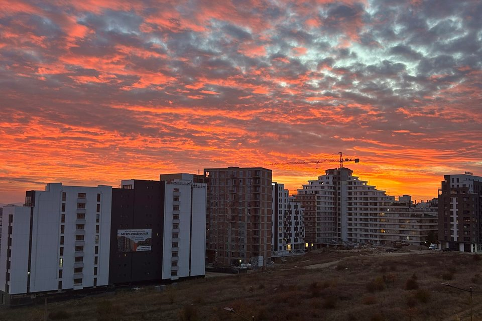
Updates
- Hike in Prevalla — At the beginning of this month, we went with the Youth Group on one of the most stunning hikes I’ve ever been on in my life. Our guide, Ken, a member of our church, took us to a trail that leads to Jazhincë Lake, a frigid mountain lake about an hour from Prishtina. It was a challenging hike, nearly 11 miles with 3,000 feet of elevation gain. We climbed steep paths, foraged fresh berries, walked a narrow path called the “saddle”, and finished with a rock scramble over massive boulders to reach this mountain oasis. The views were breathtaking, and it was such a gift to spend so much time with the youth, getting to complete something challenging with them—while also getting to know them so much better! I definitely want to hike more in Kosovo!
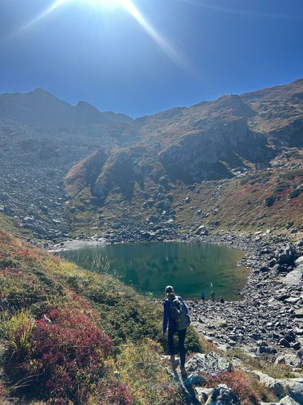
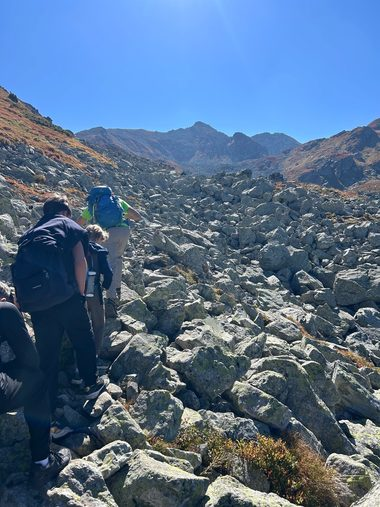
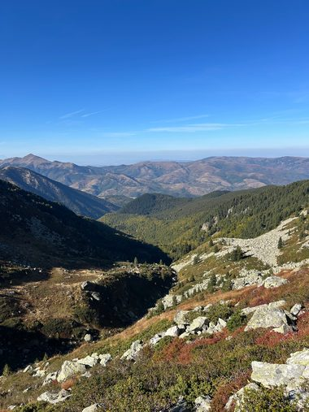
- Fall fun day — We had an awesome community outreach event this month, where we played fun games, dished out some candy, and welcomed families in for a morning of fun. This was a really sweet time, because I got to meet some of my students’ families and was able to be goofy and fun with them. Also, we got to bring some classic fun games from America, such as balloon stomp and turkey bowling! It was super cool to see the positive influence the community center has had on the neighborhoods surrounding it!
- After-school clubs — Colby and I began leading a couple of clubs at a local international school, which has been super fun to connect with a different group of kids than we see at the community center. Middle schoolers are so full of energy and it is really life giving to just laugh and play games with them. I am glad that we are able to offer these kids an opportunity to be themselves and be silly with us!
Cultural Experiences
This past weekend was packed full of awesome cultural experiences! To begin, the Scotts took us to the visa office at 6am (it doesn’t open until 8:30, but we didn’t want to wait in line all day). I will never complain about the DMV again!
We then got to tour an ethnographic museum, one of the oldest houses in Prishtina—and Violeta joined us. To her it felt like stepping back into her grandmother’s house, which really brought the history alive—especially because so many of these historical sites were destroyed or forgotten following the war in 1999. That night, the Scotts took us to watch Dua, a film that follows the life of a 13-year-old girl in Prishtina during the Kosovo war. It was a heavy movie, but really impactful and informative about what the experience of the war was really like.
Lastly, the interns and I took a trip to Skenderaj, a small town in Northern Kosovo, and were given a tour of the town by Ken and Dawn—a couple of missionaries who attend our church. In the town, there is a memorial to the Jashari family—who were slaughtered in an ambush by Serbian forces in their own home. It was sobering to visit, and gives so much context to the pain and bitterness that these people have towards Serbia. It was heartbreaking to see the house, which is still standing—riddled with bullet holes and shrapnel blasts. Adem Jashari, who was the target of the massacre, is seen as a Kosovar hero. The way he is viewed by Kosovars borders on idolatry, and there were so many claims made about him that could be redeemed by Christ—for example, a banner hanging on the house says “Ai është i gjallë” which translates to “He is still alive”, referring to Adem Jashari, not Christ. Pray that the Kosovars would learn to put their hope in the resurrected Christ, not in a fallen national hero.
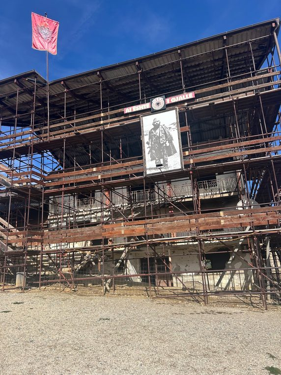
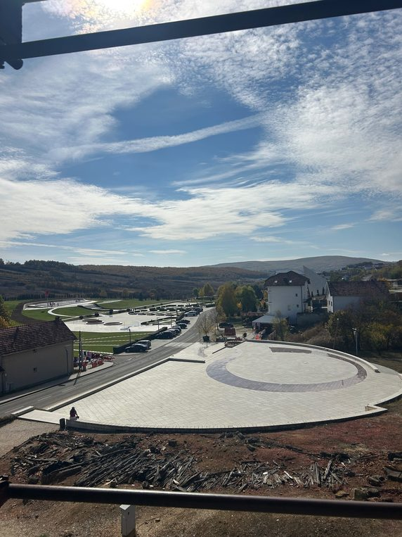
Praises
- Youth Group — I am so grateful that I get to lead the youth group at Drita e Botës with the other interns. Our first meeting was so special, and we felt really blessed by the conversations we got to have with students, and encouraging them in their faith. Also, we had four kids who do not attend a church come to that meeting, and it was really cool to see their curious hearts, and the joy they got to experience that night. We look forward to having them back, and continuing to build depth with the kids involved in the youth group.
- Interns — We now have a team of four interns at the community center, with Kayden and Cassie both serving alongside Colby and me. They are super eager to love the community here in Prishtina, and joining with them has reminded me a lot of what leading on a Young Life team was like. It is great having them here!
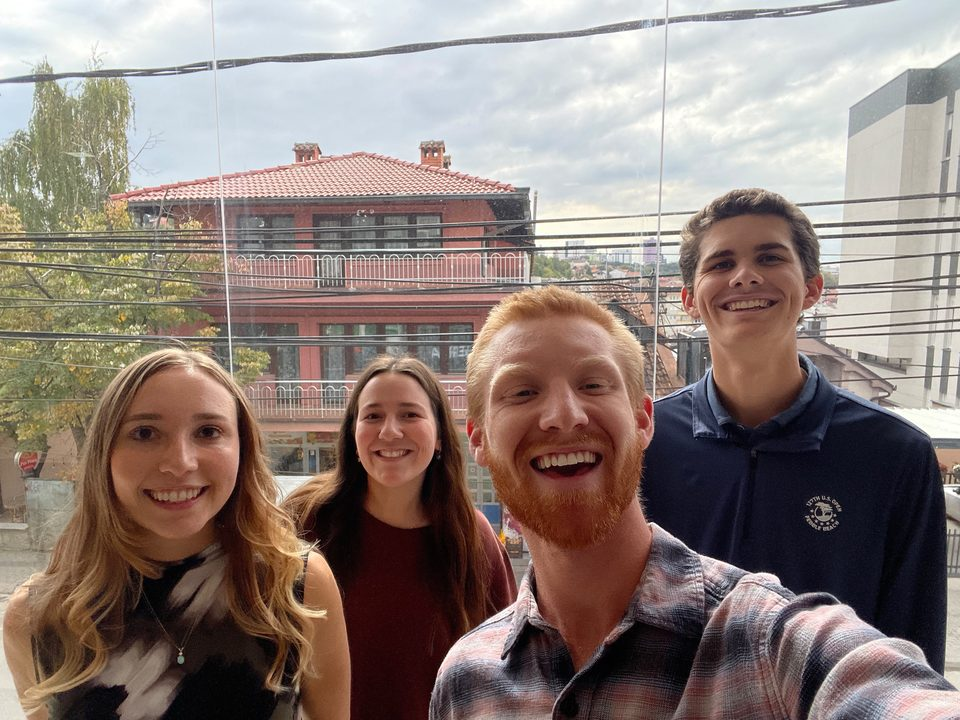
- Kosovo Hoops — I got to play basketball with a bunch of Kosovar guys (shoutout Arber!), which was really fun, and led to cool conversations on the ride back. I am really thankful for that opportunity, and hope to play more in the future!
Prayer Requests
- Prayer against consumption: I find that often when I am tired, bored, stressed, or pretty much any negative emotion, I turn towards some form of consumption, whether it be food, media, or entertainment. Pray that I would reject my desire to be filled by things that don’t satisfy, and instead turn to God, who offers true satisfaction.
- Visa applications: We have begun our visa application process, which is a pretty arduous endeavor in Kosovo, so prayers for limited difficulty and speedy approval!
- Trip to Philippi: On October 29–31, we get to go with the high schoolers from our church to the historical site where Lydia was baptized, and where Paul and Silas were jailed. Pray that kids would have open hearts to learn, and that I would get to experience the Lord in a new way through visiting this site!
Reflections / Story
God as a still, small whisper
I have been reminded throughout this month of something that my dad told me while I was discerning where God was calling me for this year. He said, “Anywhere you go will become normal after a while, no matter how different it seems.” This has started to feel more true as I am wrapping up my second month in Kosovo. As living in Kosovo has turned into my “normal” reality, I have heard the Lord speaking to me in unique ways. During a recent time in prayer, I was reminded of when the Lord appears to Elijah in 1 Kings 19. The Lord encourages Elijah to go out to a mountain and wait on the Lord’s presence to pass by. A great wind, an earthquake, and a blazing fire all come past Elijah, yet the Lord was not in any of them. Then the Lord speaks to Elijah in an unexpected way, through a gentle whisper.
While on a much smaller scale, I feel that the Lord has been revealing himself to me in a similar way during my time in Prishtina. Instead of experiencing the Lord primarily through these massive, reality-shifting events in my life such as graduating college, moving to a new country, or learning a new language, I find God whispering his love for me into my ear in moments of stillness and rest. While God certainly has spoken to me in loud, obvious ways in the past—which my human heart certainly needs sometimes—his humble mercy of reminding me how loved I am has been such a sweet gift while I’ve been here. For me, the Lord has spoken primarily through these three streams: time in the Word, time of rest, and time with the local community.
- Word — Since being here, I have memorized Psalm 139 and have begun to pray through it nightly before bed. These verses have especially stuck with me considering my practical circumstances:
“If I rise on the wings of the dawn, if I settle on the far side of the sea, even there your hand will guide me, your right hand will hold me fast.”Psalm 139:9–10 · NIV
God is everywhere, and I have been reminded of his goodness while being here, and having this scripture written on my heart has been a real encouragement to me in this season of life. Even though I have literally settled on the far side of the sea, I know that the Lord’s hand is guiding me, and holding me fast. - Rest — While my schedule has gotten busier this month, I’ve actually found that I’ve been experiencing deeper rest in the Lord’s presence, especially in the past couple of weeks. A major way that I have found this rest is through practicing a digital sabbath on Sundays, where I’ve been able to create a space for hearing the voice of God. I noticed how much noise was constantly going on in my life and how much I desired to be constantly entertained and engaged in doing something. When there is too much noise in my life, I struggle to hear God speaking to me in a whisper. Sabbath creates a space for all that noise to be quieted, and for me to be able to discern what the Lord is speaking to me. I am thankful that God created rest for us, and that when we accept the opportunity to rest, God is quick to meet us in it.
- Lastly, I have seen the Lord through conversations with Kosovars. They carry a deep pride in their own country, and from that stems a deep appreciation towards Americans, for spearheading the NATO intervention in 1999. While it certainly is nice to have a great reputation in the community just for being an American, the reason I find this so encouraging is their lasting gratitude—my barber said, “Albanians will never forget when someone does something good for them, they carry that gratitude with them in their heart.” A similar sentiment was shared in a conversation the interns and I got to have with a guy who runs a burger shop, and this heart of gratitude has offered me a glimpse of hope for the community as a whole. The gratitude they hold is a gift, and I pray that one day they would get to pour out their thanks to the God who created them and desires to love them perfectly and completely.
It has also been encouraging to hear the story and heart for Kosovo that the older generation has, such as through spending time with Violeta, a believer who works at the community center and was forced to flee Kosovo during the war, or getting coffee with Ahmet Shala, a Kosovar man who is involved in many things in Kosovo but also serves as a Global Ambassador at JMU! Hearing their stories has revealed to me more of a heart for the Kosovar people, and is another place where I feel the Lord calling me to listen, and seek where he is moving in this country.
These lines, from “The Whole Earth is Full of Your Glory” by Mission House, perfectly encapsulate how I have been seeing the Lord through the people here!
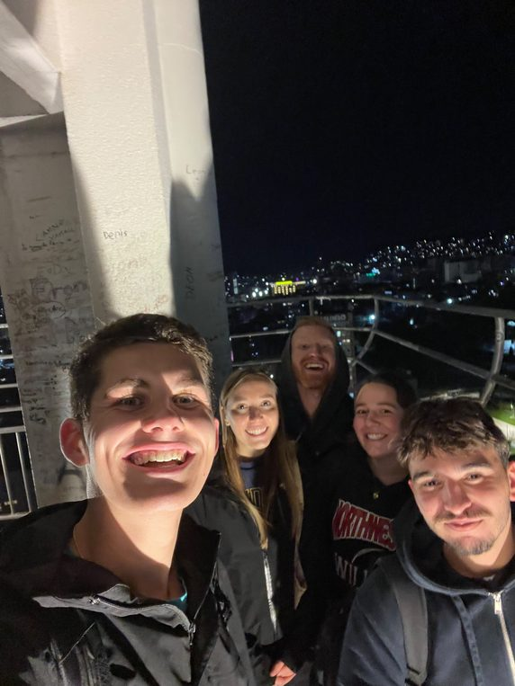
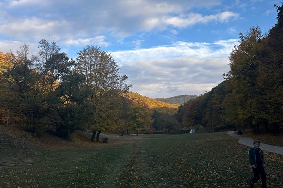
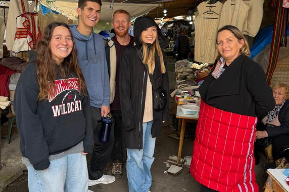
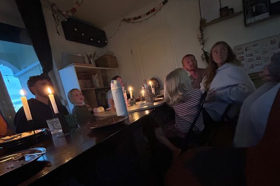
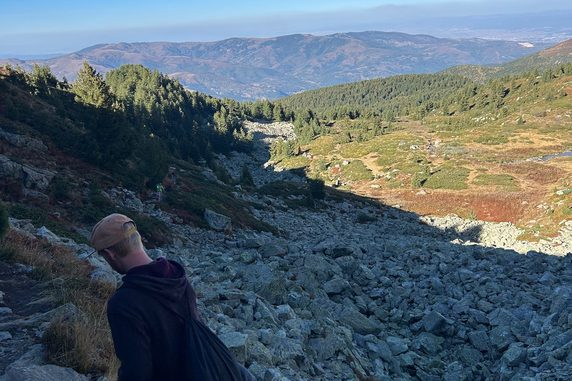